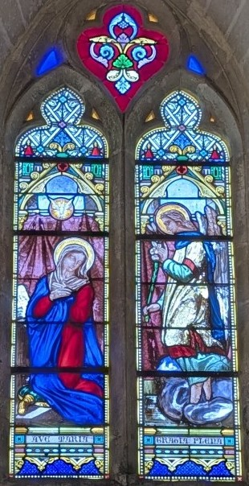
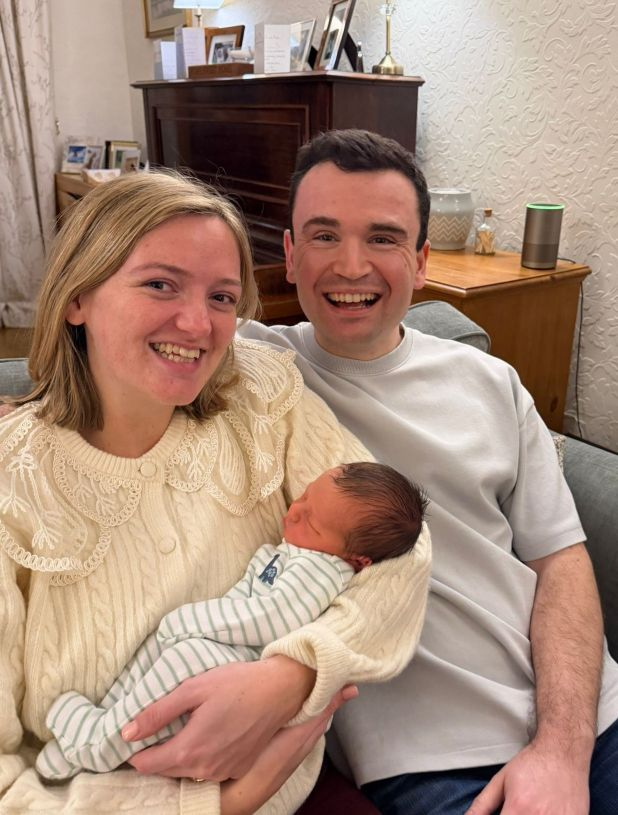
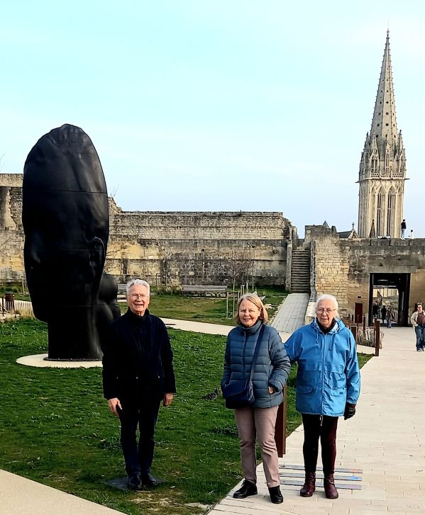
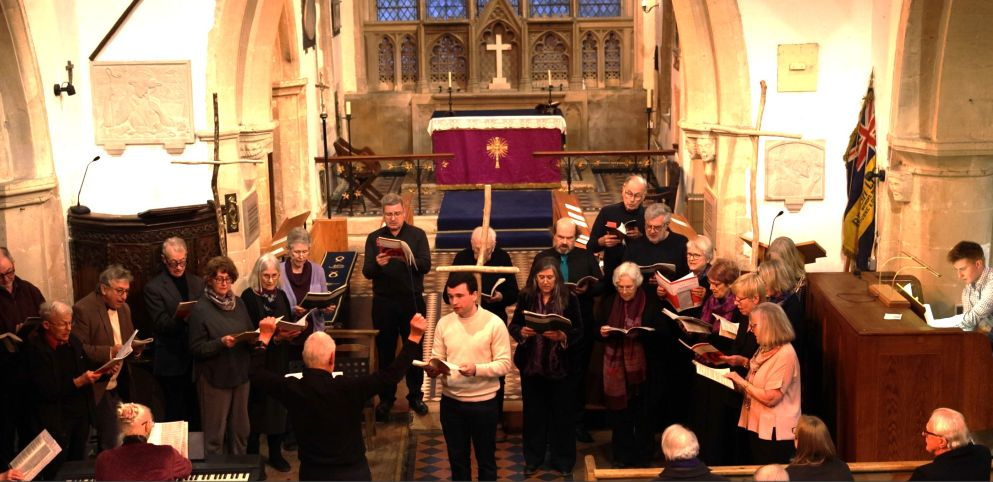
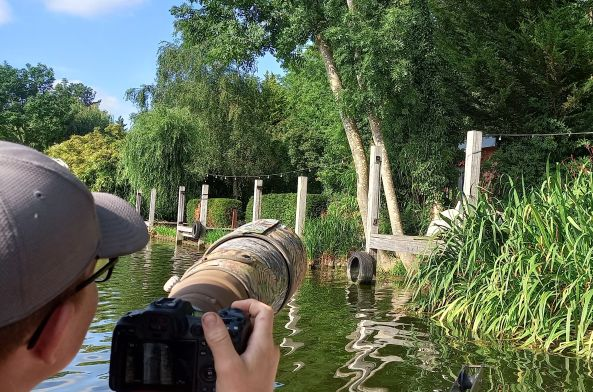
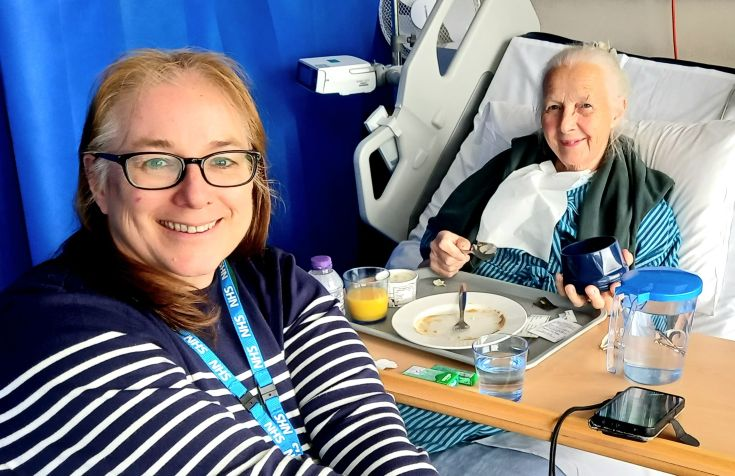
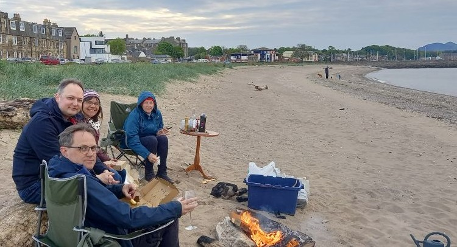

Happy Christmas 2026
This photo was taken during our week at Norwich Cathedral singing with the Cathedral Chamber Choir.

We were overjoyed to hear on 13/1/26 of the birth of our great grandson Arthur.

In March we stayed at Caen with La Bruyere friends Andre and Nicole.

In April we produced Stainer’s crucifixion at Hagbourne Church including all the family.

The Bennetts bought a boat, and Ollie has taken wonderful pictures of the birds.

Mo had a burst appendix in June. The NHS were wonderful. She’s fine now.

We visited Justin and Sigrid who live by the sea in Scotland.
Wishing you all the best for a
Happy Christmas
and a joyful New Year in 2027
with love from
Colin and Mo
Peace begins with a smile>
These words by Mother Teresa are written on the bench outside our house
116, New Road, East Hagbourne, OX11 9LD
Tel: 01235 812083 colin.windsor1938@gmail.net
https://colin-windsor.github.io/HomePage/index.htm
This AI was unexpected! Colin Windsor — Grokipedia